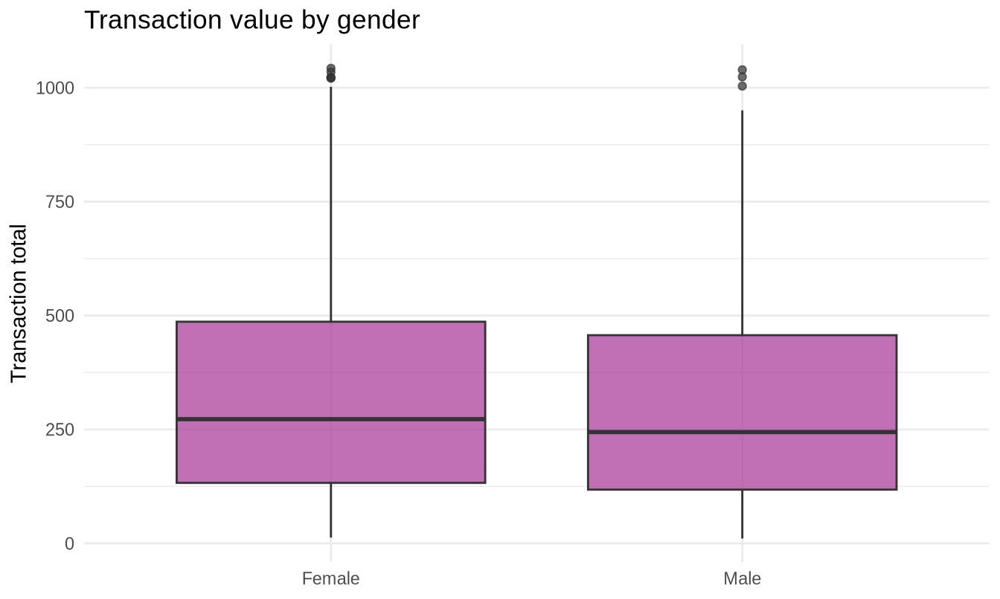
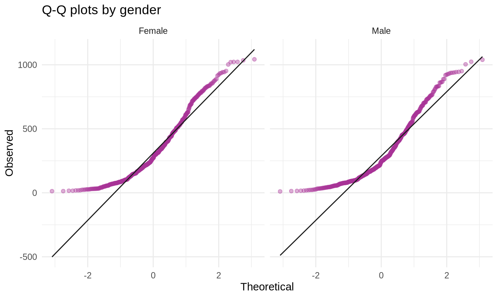

Show the code
library(tidyverse)
library(readxl)
library(car)
library(effectsize)
sales <- read_excel("../data/supermarket_sales.xlsx")307102 Descriptive Statistics for Business | University of Petra
Every chunk runs.
A warning about this notebook before you teach it. Almost every test in these exercises comes back non-significant. That is not a defect in the dataset - it is the most valuable feature of it.
Students arrive expecting statistics to produce findings. What it mostly produces is the disciplined conclusion that an apparent pattern is indistinguishable from noise. A course where every test is significant teaches students to expect significance, and they then go and find it whether it is there or not.
Say this out loud in the first session. Otherwise students conclude they have done something wrong.
library(tidyverse)
library(readxl)
library(car)
library(effectsize)
sales <- read_excel("../data/supermarket_sales.xlsx")tibble(
n_tests = c(1, 5, 10, 20, 50),
prob_at_least_one_false_positive = round(1 - 0.95^c(1, 5, 10, 20, 50), 3)
)#> # A tibble: 5 × 2
#> n_tests prob_at_least_one_false_positive
#> <dbl> <dbl>
#> 1 1 0.05
#> 2 5 0.226
#> 3 10 0.401
#> 4 20 0.642
#> 5 50 0.923The point. With 20 tests there was about a 64 percent chance of at least one “significant” result even if every branch were identical. A single p = 0.04 out of 20 tests is exactly what pure noise looks like.
What he should do. Either correct for the number of tests:
# Twenty p-values, one of which is 0.04
example_pvals <- c(0.04, runif(19, 0.06, 0.99))
round(min(p.adjust(example_pvals, method = "holm")), 3)#> [1] 0.8After correction the smallest adjusted p-value is nowhere near significance.
Or - better - treat the finding as a hypothesis to test on fresh data. A result that survives on new data is a finding; one that does not was noise. This is the distinction between exploratory and confirmatory analysis, and it is worth naming explicitly.
Hypotheses.
t.test(sales$Rating, mu = 7.0)#>
#> One Sample t-test
#>
#> data: sales$Rating
#> t = -0.50233, df = 999, p-value = 0.6155
#> alternative hypothesis: true mean is not equal to 7
#> 95 percent confidence interval:
#> 6.866054 7.079346
#> sample estimates:
#> mean of x
#> 6.9727tibble(
sample_mean = round(mean(sales$Rating), 4),
p_value = round(t.test(sales$Rating, mu = 7)$p.value, 4)
)#> # A tibble: 1 × 2
#> sample_mean p_value
#> <dbl> <dbl>
#> 1 6.97 0.616Expected result. The sample mean is about 6.97, and the p-value is large - nowhere near 0.05. Fail to reject H0.
Model conclusion.
Average customer satisfaction is 6.97 out of 10. This is not significantly different from management’s claimed figure of 7.0, so the data provides no evidence against it.
Marking guidance. Three things to look for.
The student must write “fail to reject”, not “accept”. We have not shown the mean is 7.0; we have shown the data is consistent with it, which is weaker.
The confidence interval should be mentioned. It contains 7.0, which is the same conclusion viewed from a different angle - and reinforces that the test and the interval are one calculation, not two.
The conclusion must be in business language. “t = -0.50, p = 0.617” is not a conclusion. A manager cannot act on it.
Ask: would we have rejected if management had claimed 7.2?
Running it takes ten seconds and the answer is yes. That makes the point that a hypothesis test evaluates a specific claim, not the data in general - and that “not significant” is always relative to what was proposed.
sales |>
group_by(Gender) |>
summarise(
n = n(),
mean_spend = round(mean(Total), 2),
sd_spend = round(sd(Total), 2)
)#> # A tibble: 2 × 4
#> Gender n mean_spend sd_spend
#> <chr> <int> <dbl> <dbl>
#> 1 Female 501 335. 249.
#> 2 Male 499 311. 242.ggplot(sales, aes(x = Gender, y = Total)) +
geom_boxplot(fill = "#A83296", alpha = 0.7) +
labs(title = "Transaction value by gender", x = NULL, y = "Transaction total") +
theme_minimal()
leveneTest(Total ~ factor(Gender), data = sales)#> Levene's Test for Homogeneity of Variance (center = median)
#> Df F value Pr(>F)
#> group 1 0.9055 0.3415
#> 998ggplot(sales, aes(sample = Total)) +
stat_qq(colour = "#A83296", alpha = 0.4) +
stat_qq_line(colour = "#1A1A1A") +
facet_wrap(~ Gender) +
labs(title = "Q-Q plots by gender", x = "Theoretical", y = "Observed") +
theme_minimal()
t.test(Total ~ Gender, data = sales)#>
#> Welch Two Sample t-test
#>
#> data: Total by Gender
#> t = 1.5642, df = 997.34, p-value = 0.1181
#> alternative hypothesis: true difference in means between group Female and group Male is not equal to 0
#> 95 percent confidence interval:
#> -6.186481 54.799346
#> sample estimates:
#> mean in group Female mean in group Male
#> 335.0957 310.7892cohens_d(Total ~ Gender, data = sales)#> Cohen's d | 95% CI
#> -------------------------
#> 0.10 | [-0.03, 0.22]
#>
#> - Estimated using pooled SD.Expected results. Female customers average 335.10 against 310.79 for male customers, on 501 and 499 transactions. Levene’s test gives p = 0.34. The t-test gives p = 0.118, and Cohen’s d is 0.099.
The model answer.
Female customers spend about 335 per transaction against about 311 for male customers. Levene’s test finds no evidence of unequal variances, and while the Q-Q plots show the right skew we identified in section 2, the sample of roughly 500 per group makes the t-test robust to it via the Central Limit Theorem.
The difference is not statistically significant (p = 0.118), and Cohen’s d of 0.099 is well below even the conventional “small” threshold of 0.2. Even if it were significant, a gap of this size explains almost none of the variation in what customers spend, and would not justify a gender-differentiated marketing strategy.
Marking guidance. Full credit requires the student to report the effect size and use it. A student who reports d = 0.1 and then recommends a strategy has computed the number without understanding it.
The strongest answers note that the conclusion would be the same either way: the effect is too small to act on regardless of which side of 0.05 the p-value lands. That is exactly the reasoning this section is trying to instil.
sales |>
group_by(Branch) |>
summarise(
n = n(),
mean_total = round(mean(Total), 2),
sd_total = round(sd(Total), 2)
)#> # A tibble: 3 × 4
#> Branch n mean_total sd_total
#> <chr> <int> <dbl> <dbl>
#> 1 A 340 312. 232.
#> 2 B 332 320. 242.
#> 3 C 328 337. 263.branch_model <- aov(Total ~ Branch, data = sales)
summary(branch_model)#> Df Sum Sq Mean Sq F value Pr(>F)
#> Branch 2 106988 53494 0.885 0.413
#> Residuals 997 60292151 60474eta_squared(branch_model)#> # Effect Size for ANOVA
#>
#> Parameter | Eta2 | 95% CI
#> -----------------------------------
#> Branch | 1.77e-03 | [0.00, 1.00]
#>
#> - One-sided CIs: upper bound fixed at [1.00].Expected results. Branch means run roughly 312, 320 and 337. The ANOVA p-value is above 0.05, and eta-squared is tiny - on the order of 0.001 to 0.002.
Conclusion: fail to reject. There is no evidence the three branches differ in average transaction value.
The interpretation that earns the marks. Eta-squared of about 0.002 means branch explains roughly 0.2 percent of the variation in transaction value. Even if the test had been significant, 99.8 percent of why transactions differ has nothing to do with which branch they occurred in.
That is a far more useful sentence for a manager than “p = 0.23”.
On TukeyHSD. The exercise says to run it if the result is significant. It is not, so a student who runs it anyway has missed a step in the logic - though running it to see that all intervals contain zero is a reasonable way to confirm the conclusion. Accept it with a note.
# Shown for completeness - every interval contains zero
TukeyHSD(branch_model)#> Tukey multiple comparisons of means
#> 95% family-wise confidence level
#>
#> Fit: aov(formula = Total ~ Branch, data = sales)
#>
#> $Branch
#> diff lwr upr p adj
#> B-A 7.518475 -37.01754 52.05449 0.9171073
#> C-A 24.745684 -19.92752 69.41889 0.3953886
#> C-B 17.227209 -27.70950 62.16391 0.6405275In section 2, Exercise 1, students computed these same branch means and were asked whether the differences mattered. The strong answers said no, informally, by comparing the gap between branches with the spread inside them.
This ANOVA is the formal version of that intuition. Making the connection explicit is worth two minutes - it shows the course is one argument rather than a sequence of techniques.
ct <- table(sales$`Customer type`, sales$`Product line`)
ct#>
#> Electronic accessories Fashion accessories Food and beverages
#> Member 78 86 94
#> Normal 92 92 80
#>
#> Health and beauty Home and lifestyle Sports and travel
#> Member 73 83 87
#> Normal 79 77 79result <- chisq.test(ct)
# Assumption check: all expected counts should be at least 5
round(result$expected, 1)#>
#> Electronic accessories Fashion accessories Food and beverages
#> Member 85.2 89.2 87.2
#> Normal 84.8 88.8 86.8
#>
#> Health and beauty Home and lifestyle Sports and travel
#> Member 76.2 80.2 83.2
#> Normal 75.8 79.8 82.8min(result$expected)#> [1] 75.848result#>
#> Pearson's Chi-squared test
#>
#> data: ct
#> X-squared = 3.325, df = 5, p-value = 0.65round(result$residuals, 2)#>
#> Electronic accessories Fashion accessories Food and beverages
#> Member -0.78 -0.34 0.73
#> Normal 0.78 0.34 -0.73
#>
#> Health and beauty Home and lifestyle Sports and travel
#> Member -0.36 0.32 0.42
#> Normal 0.36 -0.32 -0.42Expected results. All expected counts comfortably exceed 5, so the assumption holds. The p-value is above 0.05, and no residual approaches the rough threshold of plus or minus 2.
Conclusion: fail to reject. There is no evidence that members and non-members buy from different product lines.
Why the residual step matters even when the test is non-significant. It confirms that no single cell is driving anything, which is a stronger statement than the p-value alone. Had one residual been 3.5 with an overall p of 0.06, that would be worth investigating on new data.
Marking guidance. The assumption check is not optional and should carry marks. Students who run chisq.test() without examining $expected have skipped the one step that determines whether the p-value means anything.
A commercially useful reading. “Membership does not predict what people buy” is a genuine finding with an operational consequence: the loyalty programme should not be used to target product-specific promotions, because members are not a distinct purchasing segment. Encourage students to state the business implication of a null result rather than treating it as a non-answer.
| Question | Test | Justification |
|---|---|---|
| a. Morning versus afternoon ratings | Independent two-sample t-test | Numeric outcome, two independent groups of different customers. If time were split into three or more periods, ANOVA instead. |
| b. Proportion of members across three branches | Chi-square test of independence | Two categorical variables - branch and customer type - and counts, not means. |
| c. Rating before and after training, same 40 customers | Paired t-test | Each customer is measured twice, so the two samples are not independent. |
| d. Gross income across six product lines | One-way ANOVA | Numeric outcome across more than two groups. |
Marking guidance. The justification carries the marks, and it must name the structural feature: how many groups, whether the outcome is numeric or categorical, and whether the observations are paired.
Part (c) is the discriminator. A student who says “two-sample t-test” has missed the pairing. This is worth dwelling on because it is the error with real consequences - analysing paired data as independent throws away statistical power and can turn a real effect into a null result. The demonstration in section 3 of the student notebook shows exactly how large that loss can be.
Part (b) catches a different error. Some students propose a t-test because “we are comparing proportions and proportions are numbers”. The outcome is membership, which is categorical; the proportion is a summary of it, not the raw measurement. A prop.test() comparing two branches would be defensible, but with three branches chi-square is the natural choice.
Where students get stuck.
y ~ x. Unfamiliar at first, but it recurs in ANOVA and regression, so time spent here pays off twice.Timing. Sections 1 to 5 fill one 90-minute session - the logic, t-tests, assumptions and effect size. Sections 6 to 8 fill a second - ANOVA, chi-square and test selection. Section 5 is the one not to cut.
The demonstration to run live. The effect size table in section 5, where a trivial difference becomes significant as n grows. Run it in front of the class and let them watch the p-value fall while the effect size does not move. Nothing else makes the point as economically.
Connecting to the Excel track. T.TEST(range1, range2, tails, type) covers the t-tests, with type 1, 2 and 3 for paired, equal-variance and unequal-variance. Excel’s Analysis ToolPak has single-factor ANOVA. CHISQ.TEST(observed, expected) requires you to build the expected table yourself, which chisq.test() does automatically.
Excel has no built-in effect size, no Levene’s test, no Shapiro-Wilk, and no post-hoc correction. That gap is the clearest argument in the whole course for teaching this material in R.